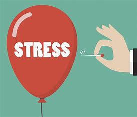
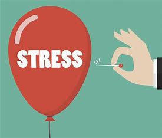

Le développement personnel est une démarche globale de réflexion sur soi et de valorisation de son potentiel dans le but
d’améliorer la qualité de sa vie et de réaliser ses aspirations profondes. Il peut toucher différents aspects de la vie :
professionnel, personnel, spirituel, financier, relationnel, familial¹. Voici pourquoi il est essentiel de contribuer à son
développement personnel :
1. Confiance en soi: Le développement personnel permet d'augmenter la confiance en soi, une qualité essentielle pour réussir
dans les affaires et dans la vie en général³.La confiance en soi est la capacité à croire en soi, en ses compétences, son potentiel et ses capacités. Elle nous permet de gérer les situations quotidiennes, de faire des choix, de réagir et de s'adapter. Avoir confiance en soi, c'est croire que l'on peut aller de l'avant, relever de nouveaux défis, et que les échecs ne sont pas irrémédiables. Voici quelques éléments importants à savoir sur la confiance en soi :
Origines du manque de confiance en soi: Le manque de confiance en soi peut avoir diverses origines, telles que l'éducation, des traumatismes, la peur d'échouer, ou encore des critiques reçues. Parfois, plusieurs facteurs s'accumulent pour causer ce manque de confiance. Des problèmes du passé peuvent également jouer un rôle, et un travail psychothérapeutique peut aider à les mettre en lumière.
Symptômes du manque de confiance en soi: Les personnes qui manquent de confiance en elles peuvent ressentir de la timidité, un manque d'assurance, la peur du regard des autres, le repli sur soi, ou encore la difficulté à prendre des décisions. Ce manque de confiance peut entraver l'épanouissement personnel et professionnel.
Conséquences du manque de confiance en soi : Le manque de confiance en soi peut se traduire par une dévalorisation de soi, des difficultés sociales, et une incapacité à s'affirmer. Cela peut également affecter la prise de décision et l'interaction avec les autres.
Solutions pour renforcer la confiance en soi: Travailler sur la connaissance de soi, adopter un regard bienveillant envers soi-même, et se fixer des objectifs réalistes sont des étapes importantes pour développer la confiance en soi. Les professionnels de la psychologie sont là pour accompagner ce processus.
En somme, la confiance en soi est un élément essentiel pour mener une vie épanouissante et réussir dans nos projets personnels et professionnels¹²³.
2. Créativité : En mettant l'accent sur la conscience de soi et la progression vers ses objectifs, le développement personnel
renforce la créativité et l'ouverture aux bonnes idées⁴.La créativité est la capacité d'un individu à imaginer et mettre en œuvre
un concept neuf, un objet nouveau ou à découvrir une solution originale à un problème. Elle peut être plus précisément définie comme
« un processus psychologique ou psycho-sociologique par lequel un individu témoigne d'imagination et d'originalité dans la manière
d'associer des choses, des idées, des situations et, par la publication du résultat concret de ce processus, change, modifie ou
transforme la perception, l'usage ou la matérialité auprès d'un public donné¹.
Opérationnellement, la créativité d'un individu est sa capacité à imaginer et produire (généralement sur commande en un court laps
de temps ou dans des délais donnés), une grande quantité de solutions, d'idées ou de concepts permettant de réaliser de façon efficace
puis efficiente et plus ou moins inattendue un effet ou une action donnée. La créativité s'évalue donc — en peinture comme en
architecture, en design, en musique, en cinéma ou en mathématiques, dans l'industrie et les services, la médecine ou la psychothérapie,
l'humour, etc. — par les délais de réponse, la rapidité de production, la quantité de solutions, l'efficacité puis l'efficience et
l'originalité (définie comme l'inverse de la banalité)¹.
En somme, la créativité est un processus dynamique qui nous permet de transcender les limites de la pensée conventionnelle et d'explorer
de nouveaux horizons. Elle est essentielle pour l'innovation, l'expression artistique et la résolution de problèmes complexes.
.jpg) 3. Réduction du stress : Une meilleure connaissance de soi et la réalisation d'aspirations profondes contribuent à une gestion
plus sereine des émotions et à la réduction du stress quotidien⁵.
En somme, contribuer à son développement personnel revient à redonner un sens à son existence, à se connaître davantage, et à
avancer vers une vie plus épanouissante et satisfaisante¹⁵.
Il existe de nombreuses astuces pour faire face au **stress**. Voici quelques conseils simples pour réduire le stress au quotidien:
1. **Laissez votre smartphone de côté** : Les appareils dernier cri comme les smartphones, les tablettes et les ordinateurs portables peuvent certes nous faciliter la vie, mais ils stressent aussi de nombreuses personnes qui doivent ou veulent rester joignables en permanence. Prenez une journée sans téléphone et laissez-le de côté. Vous serez surpris de voir à quel point cela peut détendre. De plus, évitez d'utiliser votre portable au lit, car cela peut perturber votre sommeil¹.
2. **Établissez une liste de choses à faire** : Si vous perdez parfois la vue d'ensemble de toutes vos tâches, essayez de rédiger une liste. Vous verrez noir sur blanc ce que vous avez déjà accompli, et cela vous soulagera énormément et réduira le stress¹.
3. **Buvez de l'eau** : Pour l'organisme, le stress correspond à un état d'urgence. La tension artérielle augmente, les muscles sont davantage irrigués, et la capacité de concentration et la performance cérébrale diminuent. Boire de l'eau peut aider à atténuer ces effets, car l'eau est essentielle pour le cerveau, là où le stress survient. Faire couler quelques gouttes d'eau derrière les oreilles ou se mouiller les poignets peut également réduire le stress¹.
4. **Faites de petites pauses** : Même une courte pause permet de s'évader un moment. Au lieu d'écrire un e-mail au collègue d'à côté, allez le voir ou allez chercher un café à la cafétéria. Cela fait bouger le corps et l'esprit, stimule la créativité et contribue à réduire le stress¹.
5. **Riez** : Le rire est peut-être le meilleur moyen d'évacuer le stress. Lorsqu'on rit, notre organisme sécrète de la sérotonine, l'hormone du bonheur. Un sourire détendu suffit déjà pour faire passer le stress¹.
En appliquant ces conseils, vous pourrez réduire le stress et améliorer votre bien-être au quotidien. Prenez soin de vous ! 😊

3. Réduction du stress : Une meilleure connaissance de soi et la réalisation d'aspirations profondes contribuent à une gestion
plus sereine des émotions et à la réduction du stress quotidien⁵.
En somme, contribuer à son développement personnel revient à redonner un sens à son existence, à se connaître davantage, et à
avancer vers une vie plus épanouissante et satisfaisante¹⁵.
Il existe de nombreuses astuces pour faire face au **stress**. Voici quelques conseils simples pour réduire le stress au quotidien:
1. **Laissez votre smartphone de côté** : Les appareils dernier cri comme les smartphones, les tablettes et les ordinateurs portables peuvent certes nous faciliter la vie, mais ils stressent aussi de nombreuses personnes qui doivent ou veulent rester joignables en permanence. Prenez une journée sans téléphone et laissez-le de côté. Vous serez surpris de voir à quel point cela peut détendre. De plus, évitez d'utiliser votre portable au lit, car cela peut perturber votre sommeil¹.
2. **Établissez une liste de choses à faire** : Si vous perdez parfois la vue d'ensemble de toutes vos tâches, essayez de rédiger une liste. Vous verrez noir sur blanc ce que vous avez déjà accompli, et cela vous soulagera énormément et réduira le stress¹.
3. **Buvez de l'eau** : Pour l'organisme, le stress correspond à un état d'urgence. La tension artérielle augmente, les muscles sont davantage irrigués, et la capacité de concentration et la performance cérébrale diminuent. Boire de l'eau peut aider à atténuer ces effets, car l'eau est essentielle pour le cerveau, là où le stress survient. Faire couler quelques gouttes d'eau derrière les oreilles ou se mouiller les poignets peut également réduire le stress¹.
4. **Faites de petites pauses** : Même une courte pause permet de s'évader un moment. Au lieu d'écrire un e-mail au collègue d'à côté, allez le voir ou allez chercher un café à la cafétéria. Cela fait bouger le corps et l'esprit, stimule la créativité et contribue à réduire le stress¹.
5. **Riez** : Le rire est peut-être le meilleur moyen d'évacuer le stress. Lorsqu'on rit, notre organisme sécrète de la sérotonine, l'hormone du bonheur. Un sourire détendu suffit déjà pour faire passer le stress¹.
En appliquant ces conseils, vous pourrez réduire le stress et améliorer votre bien-être au quotidien. Prenez soin de vous ! 😊
